FOLKLORE SOCIAL
Fiestas del Yamor
Inti Raymi
Pawkar Raymi
Coraza y Pendoneros
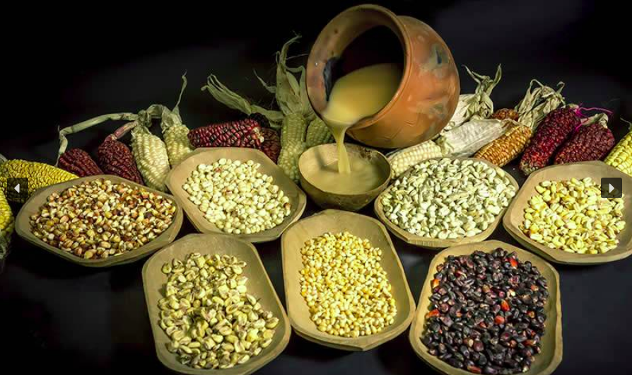
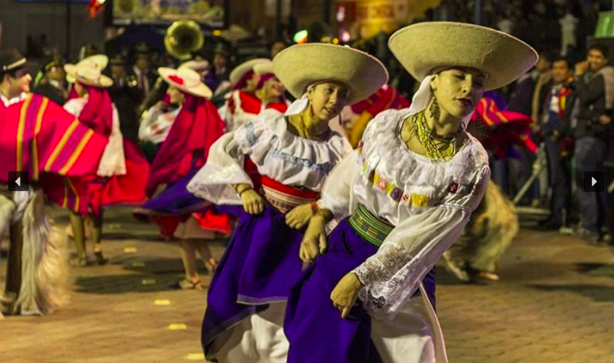
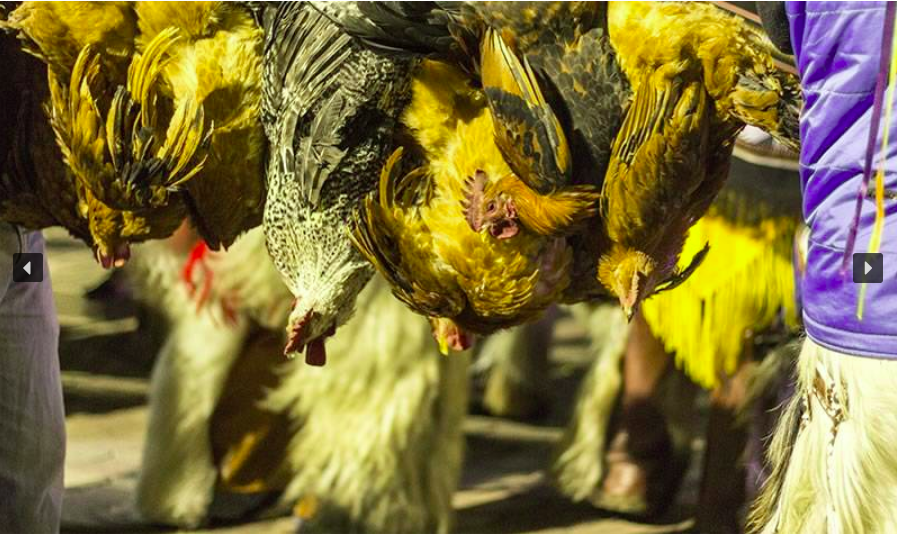
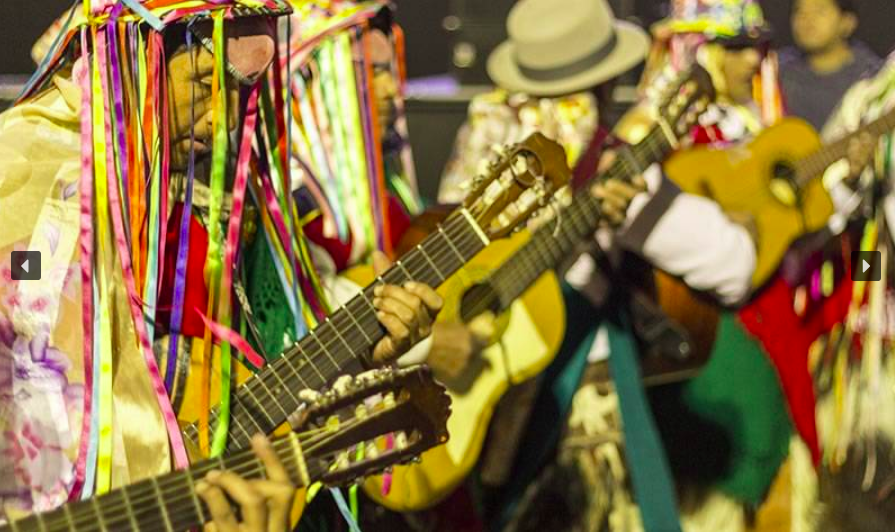
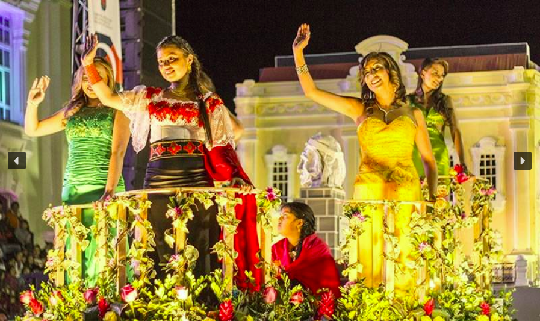
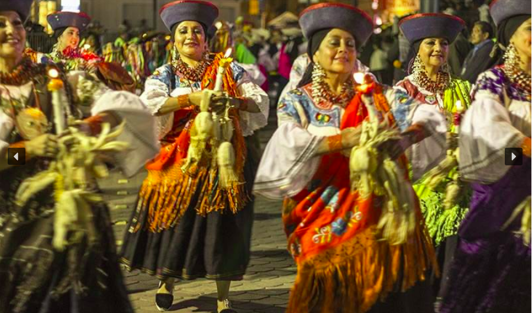
Folklore Social
FIESTAS DEL YAMOR
La fiesta del Yamor, es una celebración histórico-cultural que une la
chicha de origen pre-inca y la fe religiosa de un pueblo, se proyecta esta
festividad como un acto de un mismo pueblo unido en su diversidad, tal
como los granos del maíz que se consolidan férreamente en una mazorca. La
fiesta nació en el barrio Monserrat aproximadamente en el año de 1953, en
donde tradicionalmente se festejaba para agradecer a la virgen María de
Monserrat, patrona de Otavalo y a la Pacha Mama por la cosecha del maíz y
el trabajo vivificante de la comarca otavaleña. En dicha celebración se
ofrecían platos y bebidas típicas, en los que estaba la chicha del
“Yamor”. Con el transcurso de los años se institucionalizó denominándose
como fiesta a partir de 1953. El Yamor, en el plano histórico-cultural es
la chicha, bebida elaborada por siete variedades de maíz, la misma que
estaba destinada a los grandes caciques para que acompañen a sus
banquetes. El término Yamor proviene de dos vocablos Yak, sinónimo de
sabio y Mur, grano, denominándose al Yamor como la chicha de la sabiduría.
Esta festividad se la realiza una vez al año, a finales del mes de agosto
hasta la primera semana de septiembre, en donde los distintos actos y
eventos tienen lugar en varios escenarios de la ciudad de Otavalo y las
comunidades aledañas. Una serie de actos se desarrollan en el transcurso
de la celebración de la fiesta del Yamor que se realiza en base a los
parámetros que año tras año proyecta el Comité de Fiesta. Dentro de los
más relevantes sin lugar a dudas están:


 Folklore Social
INTI RAYMI
El origen del Inti Raymi se remonta a la época de los grandes gobernantes
Incas y a la cuna de su imperio: Cusco, cuya esencia ha sido desde esa
época: rendir culto a las deidades andinas, agradecer por las cosechas
obtenidas y exaltar la fecundidad de la madre tierra. Esta festividad
tiene un significado muy importante para el mundo andino al igual que las
celebraciones religiosas para el mundo occidental. Es considerada como la
celebración mayor de los Andes, tomando un lugar preponderante en la
cultura de los pueblos indígenas. Esto se debe en gran parte a que es la
época de la maduración de los frutos de la Pachamama por lo cual hay una
participación masiva de las comunidades en las cosechas que se ven en toda
la región. Al ser una festividad tradicional indígena, cada grupo étnico y
cada comunidad tiene una fecha y un tiempo de celebración propias.
Mientras varias comunidades inician el 22 de junio con el baño ritual en
ríos, vertientes y cascadas sagradas, otras esperan la llegada del día y
el momento apropiados para iniciar sus festividades. En todas las
comunidades indígenas del cantón Otavalo, se realizan los siguientes actos
para le celebración del Inti Raymi.
Armay Chishi – Baño Ritual
Este ritual se lo realiza el 22 de junio, día del solsticio de verano. Las
cascadas, ríos y vertientes poseen sitios especiales donde se concentra la
energía durante el año, y el baño ritual trata de captarlas a fin de
cargarse de nuevas fuerzas, eliminar energías negativas acumuladas en el
año y empezar así con la celebración del Inti Raymi. El baño tiene un
claro sentido de purificación y se vincula a los significados agrarios de
la fiesta
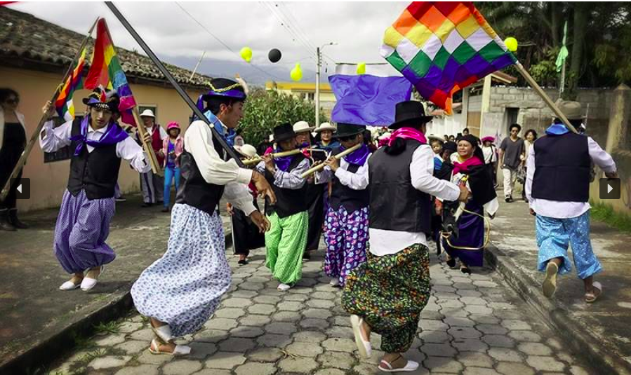
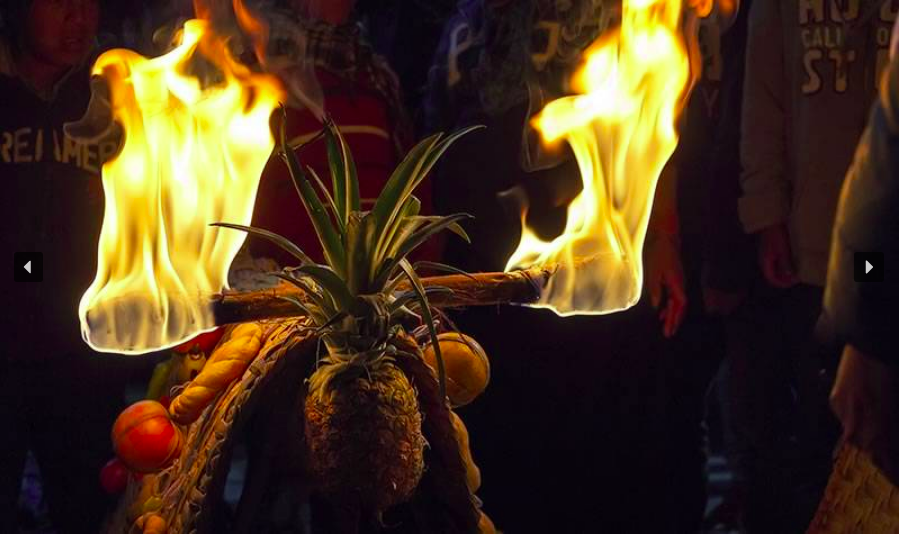
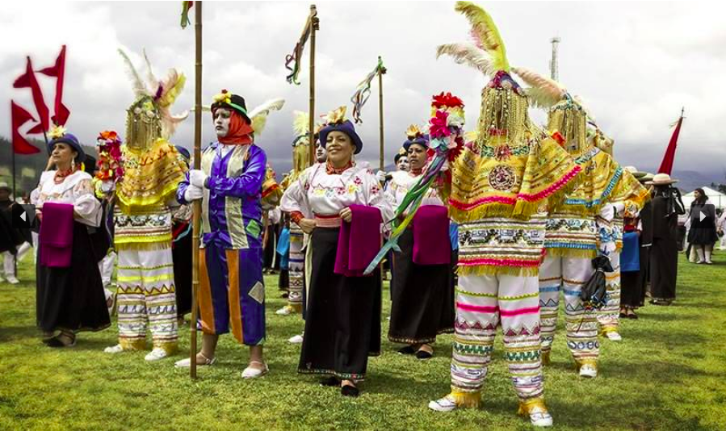
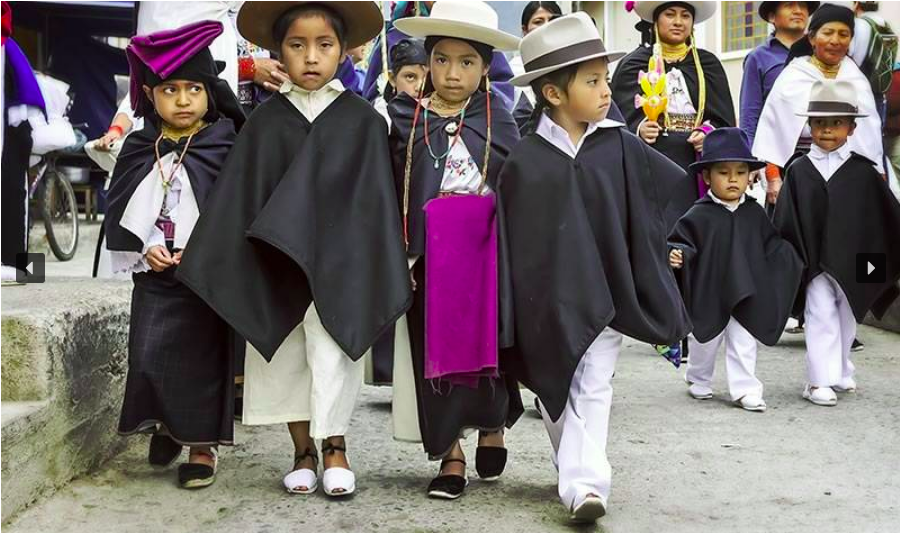
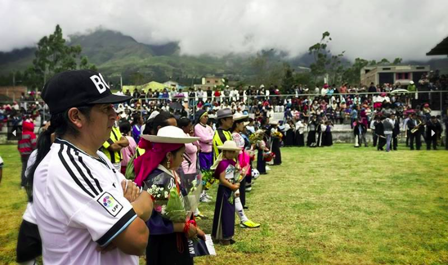
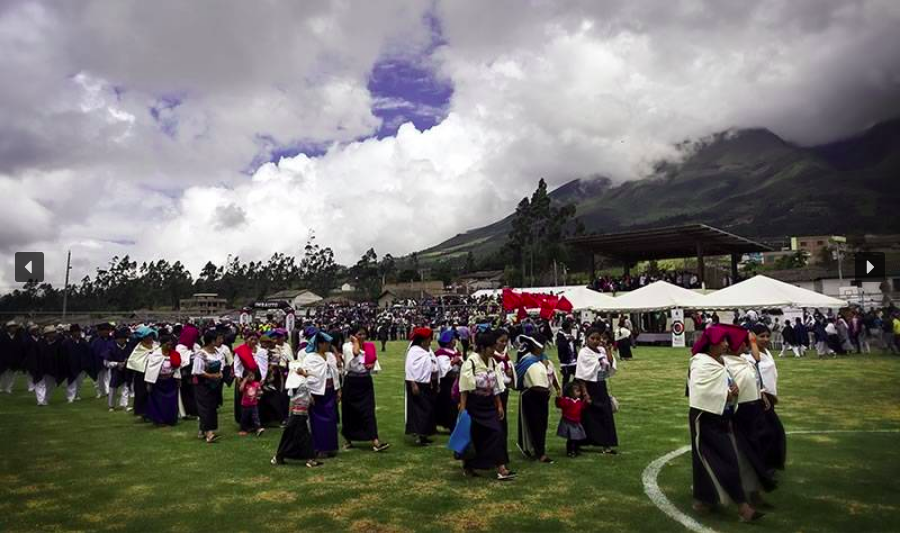
Folklore Social
PAWKAR RAYMI
El carnaval andino, por su origen, está asociado a la fertilidad de la
tierra, por cuanto florecen los sembríos, y ésta, a su vez, se vincula con
la fertilidad humana. Es la fiesta mayor de los pueblos andinos, por lo
que parecen coincidir con el calendario occidental, en donde la
variabilidad de la fecha, febrero-marzo, concuerda con la temporada de
lluvias de estos meses, permitiendo que los cultivos se fortalezcan y
aparezcan los primeros frutos. Este acontecimiento es celebrado
jubilosamente por las comunidades andinas. Generalmente se lo realiza en
el mes de febrero de cada año, teniendo una duración aproximada de 11
días. Estas actividades se desarrollan en la comunidad de Peguche,
básicamente en los espacios históricos que a su vez son lugares sagrados
(vertientes, plaza cultural, cascada de Peguche, entre otros).
PROGRAMACIÓN
Noche de Vísperas: un sábado, la víspera, se inicia la fiesta en la Plaza
Cultural de Peguche, presidida de una Misa de Acción de Gracias en honor a
la patrona Santa Lucía, luego seguirá la quema de la chamiza, castillos,
las vacas locas y juegos pirotécnicos. Es una noche de integración
comunitaria, en donde los jóvenes, niños y adultos pasarán momentos muy
gratos, en un ambiente de alegría.
Folklore Social
INTI RAYMI
El origen del Inti Raymi se remonta a la época de los grandes gobernantes
Incas y a la cuna de su imperio: Cusco, cuya esencia ha sido desde esa
época: rendir culto a las deidades andinas, agradecer por las cosechas
obtenidas y exaltar la fecundidad de la madre tierra. Esta festividad
tiene un significado muy importante para el mundo andino al igual que las
celebraciones religiosas para el mundo occidental. Es considerada como la
celebración mayor de los Andes, tomando un lugar preponderante en la
cultura de los pueblos indígenas. Esto se debe en gran parte a que es la
época de la maduración de los frutos de la Pachamama por lo cual hay una
participación masiva de las comunidades en las cosechas que se ven en toda
la región. Al ser una festividad tradicional indígena, cada grupo étnico y
cada comunidad tiene una fecha y un tiempo de celebración propias.
Mientras varias comunidades inician el 22 de junio con el baño ritual en
ríos, vertientes y cascadas sagradas, otras esperan la llegada del día y
el momento apropiados para iniciar sus festividades. En todas las
comunidades indígenas del cantón Otavalo, se realizan los siguientes actos
para le celebración del Inti Raymi.
Armay Chishi – Baño Ritual
Este ritual se lo realiza el 22 de junio, día del solsticio de verano. Las
cascadas, ríos y vertientes poseen sitios especiales donde se concentra la
energía durante el año, y el baño ritual trata de captarlas a fin de
cargarse de nuevas fuerzas, eliminar energías negativas acumuladas en el
año y empezar así con la celebración del Inti Raymi. El baño tiene un
claro sentido de purificación y se vincula a los significados agrarios de
la fiesta
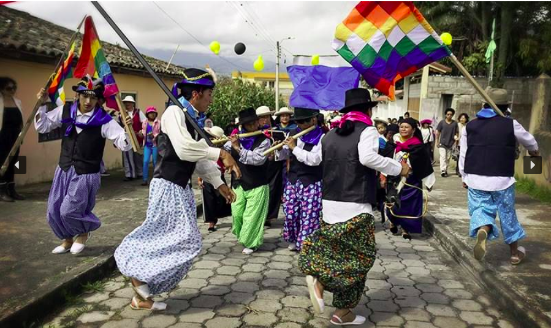
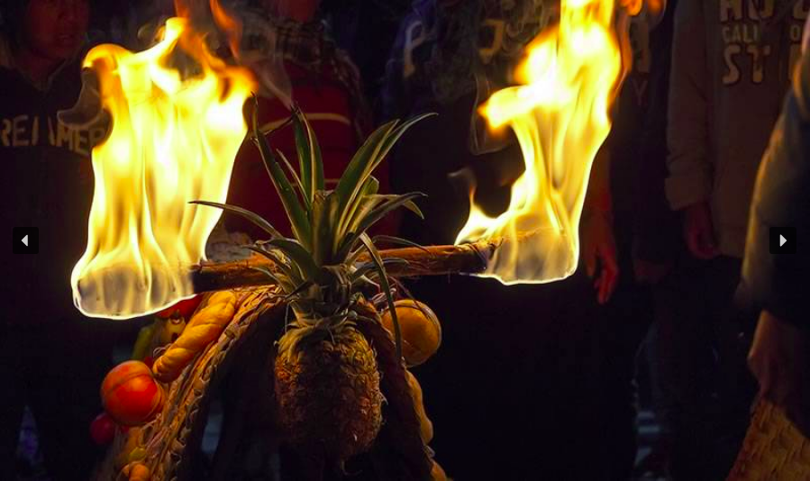
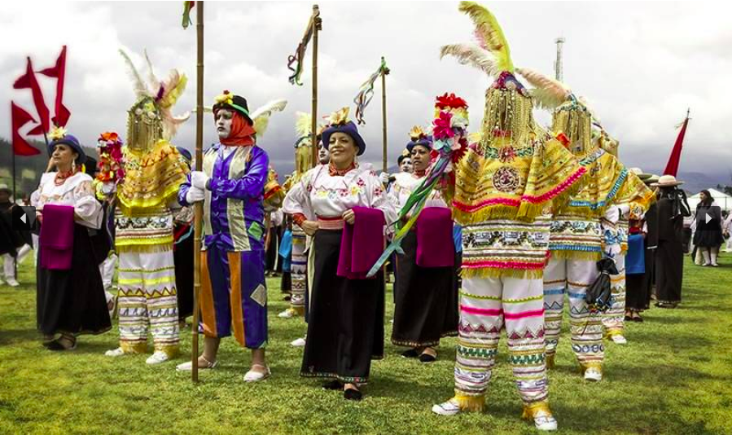
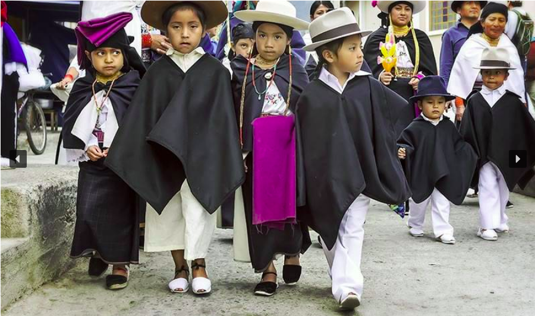
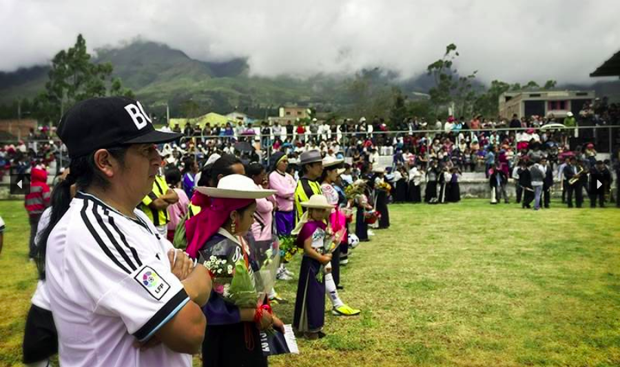
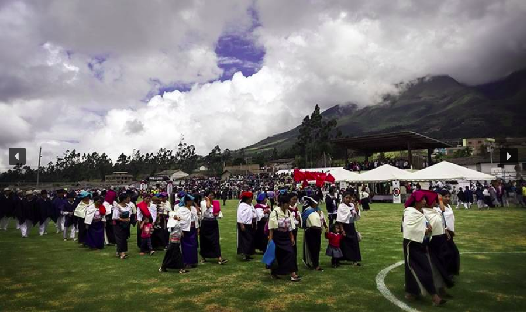
Folklore Social
PAWKAR RAYMI
El carnaval andino, por su origen, está asociado a la fertilidad de la
tierra, por cuanto florecen los sembríos, y ésta, a su vez, se vincula con
la fertilidad humana. Es la fiesta mayor de los pueblos andinos, por lo
que parecen coincidir con el calendario occidental, en donde la
variabilidad de la fecha, febrero-marzo, concuerda con la temporada de
lluvias de estos meses, permitiendo que los cultivos se fortalezcan y
aparezcan los primeros frutos. Este acontecimiento es celebrado
jubilosamente por las comunidades andinas. Generalmente se lo realiza en
el mes de febrero de cada año, teniendo una duración aproximada de 11
días. Estas actividades se desarrollan en la comunidad de Peguche,
básicamente en los espacios históricos que a su vez son lugares sagrados
(vertientes, plaza cultural, cascada de Peguche, entre otros).
PROGRAMACIÓN
Noche de Vísperas: un sábado, la víspera, se inicia la fiesta en la Plaza
Cultural de Peguche, presidida de una Misa de Acción de Gracias en honor a
la patrona Santa Lucía, luego seguirá la quema de la chamiza, castillos,
las vacas locas y juegos pirotécnicos. Es una noche de integración
comunitaria, en donde los jóvenes, niños y adultos pasarán momentos muy
gratos, en un ambiente de alegría.
Inauguración: el día siguiente el domingo, se realiza la gran
inauguración del campeonato del mundial del fútbol indígena, con el
desfile o PAKTA RIPASHUNCHIK, que inicia desde la entrada principal de
Peguche, recorriendo por las principales calles de la comunidad, hasta la
cancha de Peguche, con equipos de fútbol, básquet y sus madrinas, grupos
de música, danza y las candidatas para la elección de las Ñustas.
Actividades Artísticas: presentaciones de artistas de fama
internacional y también artistas locales otavaleños y del país, tanto
mestizos, negros como indígenas.
Ñustas Pawkar Raymi: la elección de las Ñustas es una
actividad cultural de trascendental importancia, es el espacio donde la
mujer indígena en su etapa de florecimiento viene a entrar en comunión con
la Pachamama y se fortalece con las energías que emana la madre.
Runa Kay: es la expresión y la voluntad profunda de
reafirmarse “YO SOY, NOSOTROS SOMOS, ÑUKA PACHAMIKANI, ÑUKANCHIKMIKANCHI”.
Es una ceremonia de afirmación cultural con jóvenes adolescentes.
Tumarina - CEREMONIA DEL RITUAL DEL AGUA Y LAS FLORES:
Tumarina es la ceremonia ancestral más importante del Pawkar Raymi, es la
esencia de Pawkar. Tumarina es un modo de entrar en comunión entre los
seres humanos y la Pachamama. Así en el momento de nacimiento nuestros
padres nos enseñaron que el primer baño se realiza con agua de vertiente y
flores silvestres, luego en el momento del matrimonio hacemos el ñawi
mayllay que es una forma simbólica de florecer la vida. Y finalmente en el
momento de la muerte el último baño es con agua de romero mezclado con
flores. Todos estos momentos de la vida son momentos en que entramos en
comunión con el flujo vital de la naturaleza. Se reúnen todas las mujeres
de la comunidad, muy por la madrugada y recolectan flores silvestres y los
tuktus de las chakras, de igual forma traen el agua de las diferentes
vertientes sagradas. Está mezcla de agua y pétalos de flores reposa en el
patio de la casa de cada familia, en actitud de invitación al juego
ceremonial recíproco. Se continúa con rito colocando el agua con flores en
la corona de la cabeza de las personas que íntimamente son
representativos. Para colocar se debe pronunciar frases de buen deseo,
algo así como: “deseo que su vida florezca como estas flores”
“Kayguhuanllapash”, demostrando su presencia con humildad.
Wara Chimbachik – Nombramiento del Nuevo Prioste: la vara, es
un símbolo de poder y de gobierno. Para este caso, la vara es el símbolo
de poder que la Comunidad de Peguche le entrega a un miembro de la misma
para que organice la celebración de la época del Florecimiento-Pawkar
Raymi del año siguiente.
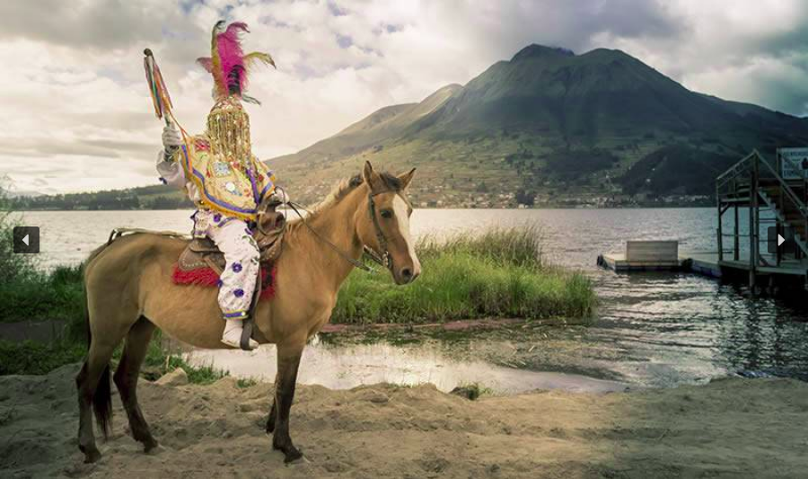
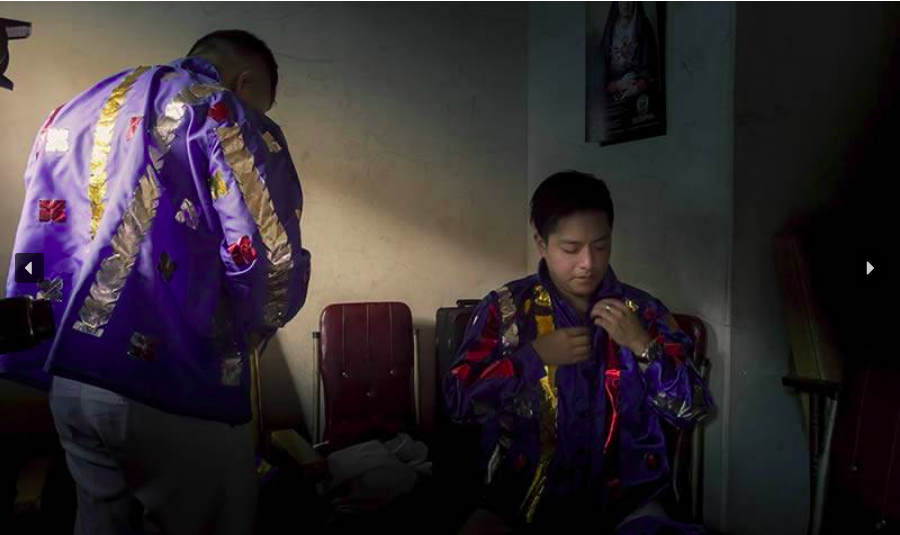
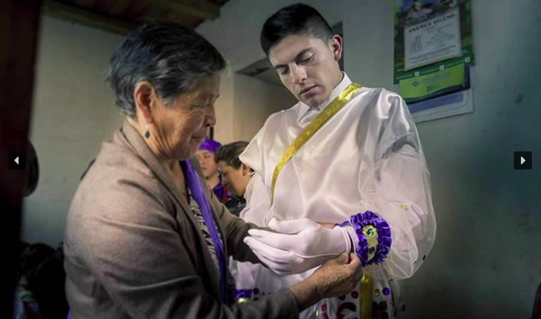
 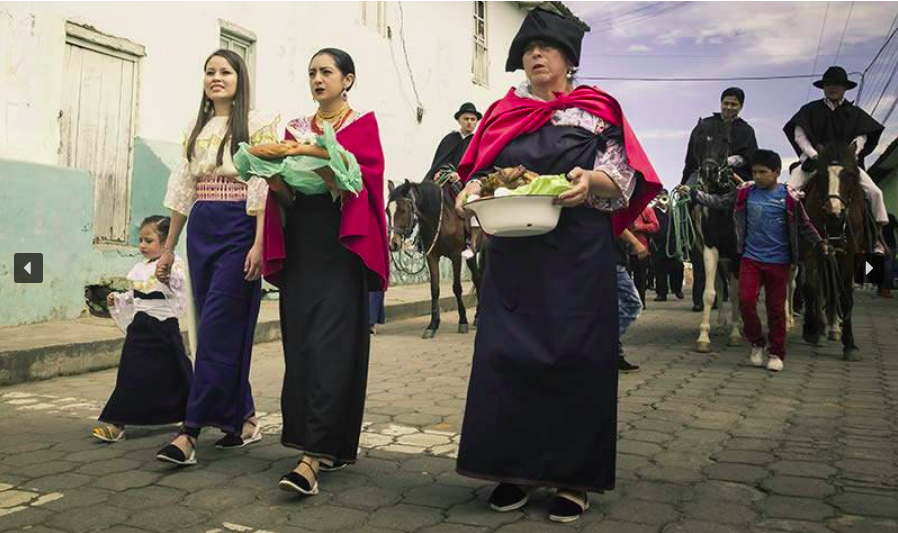
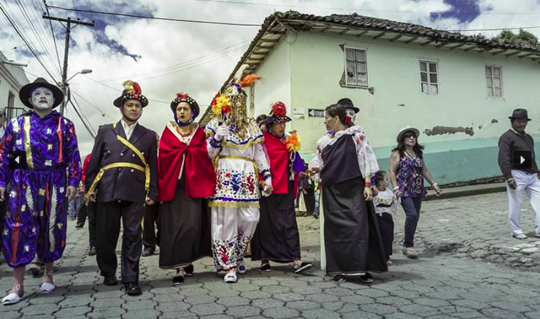
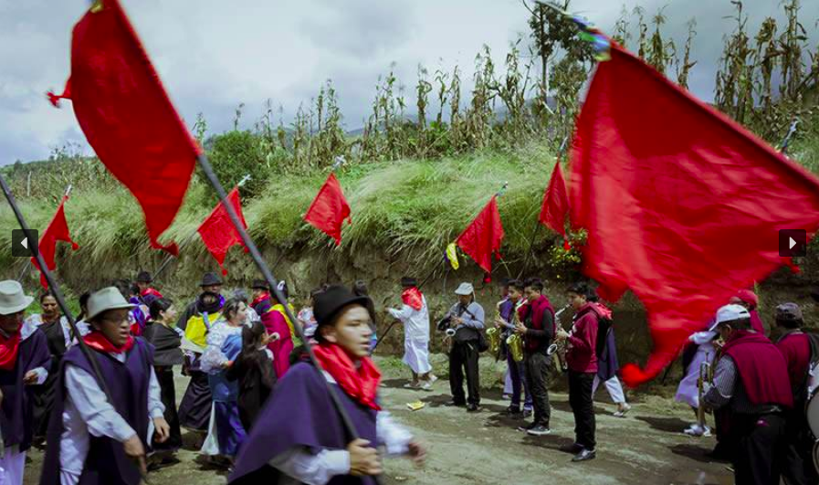
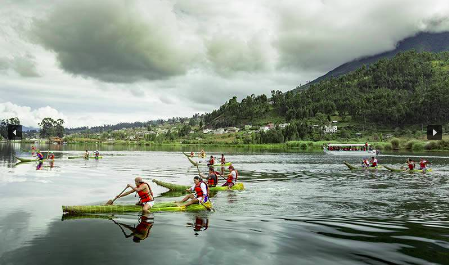
Folklore Social
FIESTAS DE SAN RAFAEL
CORAZA Y PENDONEROS
Durante los primeros días de junio, San Rafael celebra sus fiestas con toda la comunidad con varias actividades para propios y extranjeros - una fiesta al que todos están invitados. Durante estos días, los turistas pueden aprender un poco más sobre las costumbres y tradiciones de este pueblo.
Aquí están algunas de las actividades más relevantes:
Los Pendoneros
Son parte de la celebración comunitaria. Esto comienza con una misa en la iglesia de la parroquia de San Miguel Alto. Al final de la misma, el prioste ofrece bebidas y comida a todos los presentes, que luego - acompañados por la música tradicional de una banda del lugar - bailan por las diferentes calles hacia el centro de la parroquia y celebran hasta las primeras horas de la noche con todos los asistentes.
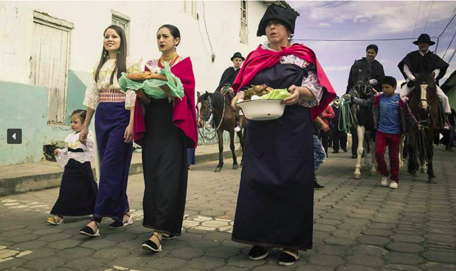
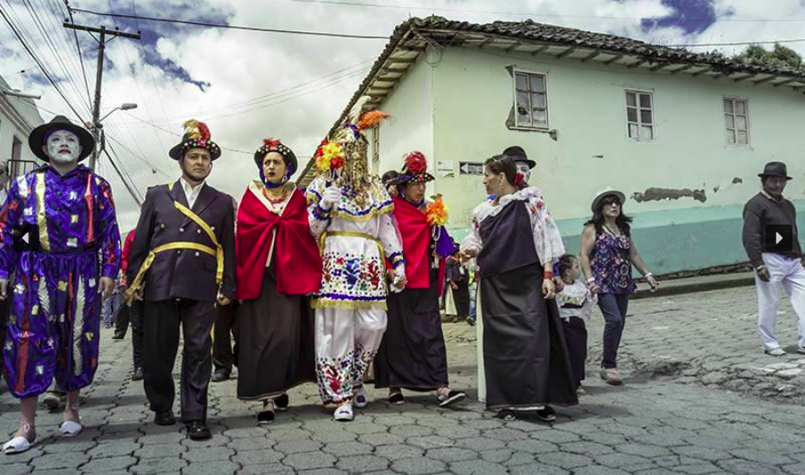
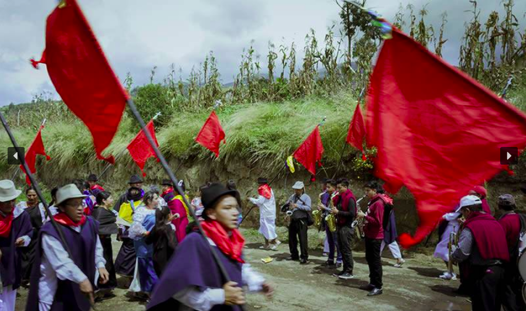
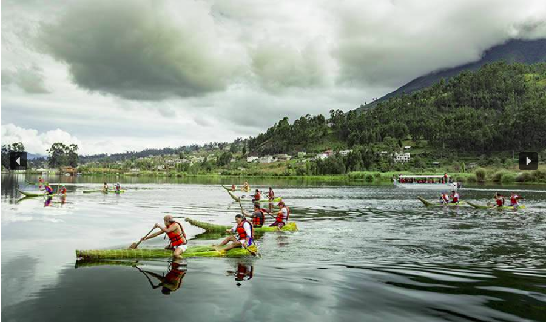
Folklore Social
FIESTAS DE SAN RAFAEL
CORAZA Y PENDONEROS
Durante los primeros días de junio, San Rafael celebra sus fiestas con toda la comunidad con varias actividades para propios y extranjeros - una fiesta al que todos están invitados. Durante estos días, los turistas pueden aprender un poco más sobre las costumbres y tradiciones de este pueblo.
Aquí están algunas de las actividades más relevantes:
Los Pendoneros
Son parte de la celebración comunitaria. Esto comienza con una misa en la iglesia de la parroquia de San Miguel Alto. Al final de la misma, el prioste ofrece bebidas y comida a todos los presentes, que luego - acompañados por la música tradicional de una banda del lugar - bailan por las diferentes calles hacia el centro de la parroquia y celebran hasta las primeras horas de la noche con todos los asistentes.
Según cuentan los ancianos del pueblo, las banderas rojas simbolizan la sangre de los enemigos derrotados en la batalla.
Las comidas compartidas con los presentes suelen ser: colada de maíz, papas, mote, cuy, gallina de campo, licores y chicha.
El Coraza
Es un personaje muy importante para las fiestas, tiene un vestido colorido y de gran calidad, joyas colgantes y plumas de colores, montado a caballo, acompañado de loas.
Es una celebración muy interesante, desde el principio hasta el final, desde el momento en que preparan al coraza hasta el final del desfile. Como este es un elemento muy importante de las celebraciones, la ropa también se confecciona varios días antes. Una vez completamente vestida, la persona se traslada a la casa del prioste, donde se le ofrece comida como colada de maíz, cuy asado, hornado y papas; y bebidas como chicha, aguardiente y demás licores, que se comparten con todos los presentes
Después de la comida, el Coraza monta un caballo y comienza el desfile a través de la calle principal del pueblo, acompañado por cientos de visitantes, una banda musical local y autoridades locales.
La procesión termina en el parque principal, donde las celebraciones continúan hasta altas horas de la noche.